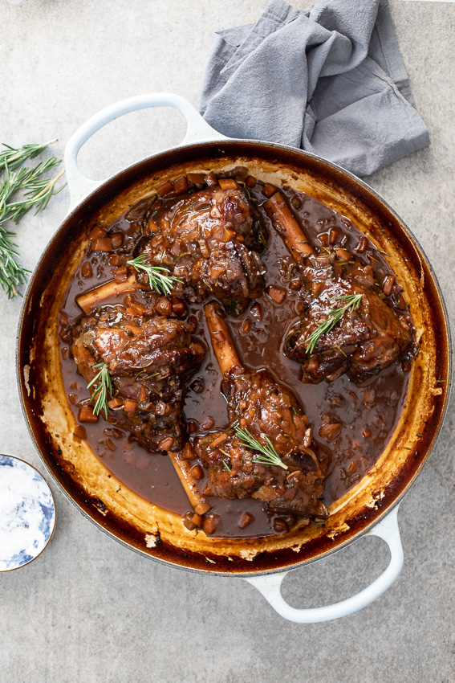

Slow braised lamb shanks

Description
braised lamb shanks
in a delicious,
rich red wine sauce is the kind of showstopping comfort food cravings are made of.
Perfect for a cozy dinner in and a great alternative for roast lamb at Easter.
Ingredients
The star of this dish is of course the lamb shanks but without all the aromatics and that delicious sauce,
they would be quite boring. To build a rich sauce,
I start by sautéing a mirepoix of onion, carrots and celery. Garlic, rosemary and bay leaf add fragrance and aroma.
Other herbs like fresh thyme or oregano would work well with the lamb too.
The sauce consists of tomato paste, red wine and stock or broth.
- Lamb shanks.
- Onions.
- Carrots.
- Celery.
- Garlic.
- Rosemary.
- Bay leaf.
- Tomato paste.
- Red wine.
- Any dry red wine like Pinot Noir or Cabernet Sauvignon will work well.
- Stock.
- Lamb/Beef broth.
- Salt and black pepper.
How to cook lamb shanks
-
Sear the lamb:
Heat a large pot or Dutch Oven (I use a braiser) over medium-high heat.
Pat the lamb dry with paper towels then drizzle with a little olive oil
and season generously with salt.
Add to the pot and sear until well-browned on all sides.
Remove and set aside.
-
Start the sauce:
In the same pot, sauté the onions, carrot, celery, garlic and herbs until soft and fragrant.
I like to let the vegetables cook until they are starting to brown to develop as much flavor as possible.
Pour in the liquid (the wine and stock), stir well and bring to a boil.
Add the lamb back to the sauce, then cover with a lid.
-
Braise:
Place in a preheated oven.
Allow to braise for 2-3 hours until the shanks are tender and the gravy has reduced.
Serve with mashed potatoes, rice or polenta.
When are lamb shanks done?
Lamb is safe to eat at 62ºC/145ºF. It will be cooked to medium-rare at that temperature.
As lamb shanks are a cut of meat filled with connective tissue, it needs low,
slow cooking to break all of that down. Therefore, the temperature of lamb shanks is less important.
You will know they are cooked when the meat comes away from the bone easily.
What to serve with lamb shanks?
The soft succulent meat loves a creamy side dish or something to mop up all that delicious sauce.
Mashed potatoes, polenta or rice are great choices.
I like making mashed sweet potatoes too and cauliflower mash would be a great low carb option.
- Cauliflower mash
- Maple butter mashed sweet potatoes
- Garlic parmesan mashed potatoes
- Soft polenta
- Steamed rice or pilaf